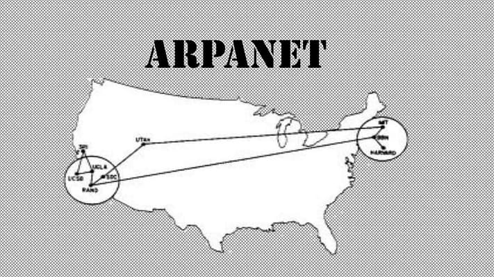
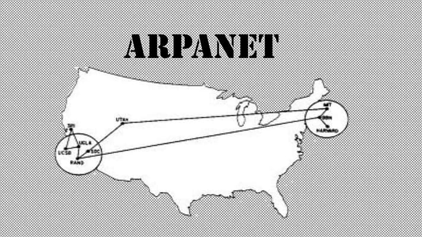
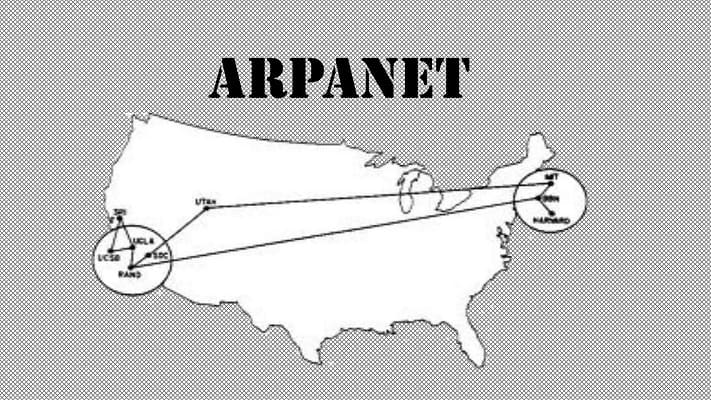
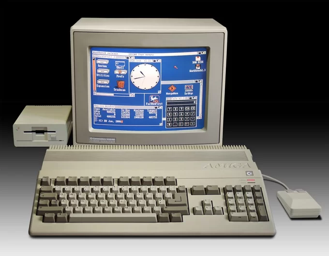
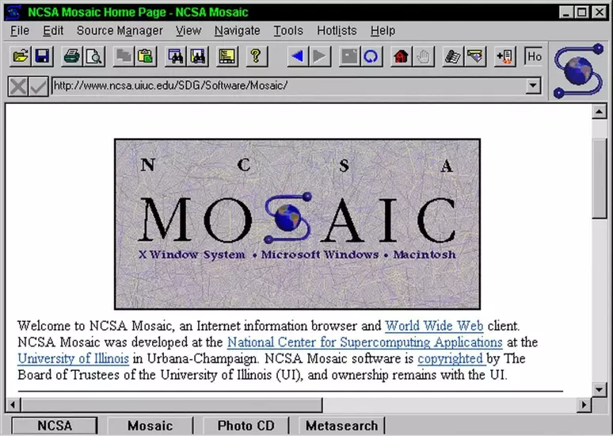
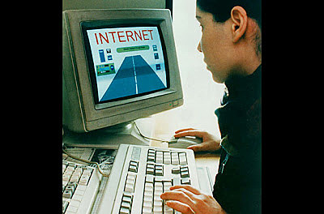

A história da internet é uma jornada fascinante que transformou a sociedade, a economia e a comunicação. Ela começou como uma rede militar e evoluiu para a ferramenta global de conectividade que usamos hoje. Vamos fazer uma viagem no tempo, desde seus primórdios até a era moderna.
A internet, como a conhecemos, tem suas raízes na década de 1960, com a criação de redes de computadores. O conceito inicial surgiu durante a Guerra Fria, quando os EUA queriam uma forma de comunicação descentralizada para resistir a ataques nucleares. Foi então que os pesquisadores criaram a ARPANET, uma rede de computadores financiada pelo Departamento de Defesa dos EUA. A ARPANET foi pioneira em permitir que computadores de diferentes locais se comunicassem entre si, e em 1969, ela conectou quatro universidades americanas.
Nos anos seguintes, novas tecnologias foram sendo desenvolvidas. Em 1972, o pesquisador Ray Tomlinson enviou o primeiro e-mail da história. A comunicação por e-mail logo se popularizou entre os usuários da ARPANET.

A ARPANET foi um sucesso técnico, mas ainda era restrita a um número limitado de usuários. Nos anos 80, a internet começou a ganhar mais relevância com o desenvolvimento do TCP/IP, um protocolo de comunicação que permitiu que diferentes redes se conectassem e formassem uma rede global. Em 1983, a ARPANET adotou o TCP/IP, permitindo que outras redes se conectassem a ela, o que é considerado o nascimento da internet moderna.
Em 1985, foi registrado o primeiro domínio na internet, o symbolics.com, e surgiram os primeiros serviços comerciais e acadêmicos online. A Usenet e os primeiros serviços de discussão online também começaram a emergir, conectando grupos de pessoas por tópicos de interesse.

A grande revolução na internet aconteceu em 1991, quando o cientista Tim Berners-Lee criou a World Wide Web (WWW), uma interface gráfica baseada em hipertextos que facilitava o acesso à informação. Isso permitiu que qualquer pessoa com acesso à internet navegasse facilmente entre diferentes páginas de conteúdo interligadas.
A WWW tornou-se pública em 1993, com o lançamento do primeiro navegador gráfico, o Mosaic. Esse avanço transformou a internet em um espaço mais acessível para o público em geral. Nos anos seguintes, empresas como AOL, Yahoo!, e Netscape começaram a oferecer acesso à internet, e as primeiras páginas de comércio eletrônico, como Amazon e eBay, surgiram.

Nos anos 2000, a internet experimentou uma explosão de crescimento. O acesso se popularizou e os **provedores de internet** (ISPs) começaram a oferecer serviços mais rápidos, especialmente com a introdução da banda larga. Surgiram os motores de busca, como o Google, e as redes sociais, como Facebook, MySpace, e, posteriormente, Twitter, que mudaram a maneira como as pessoas interagiam online.
O comércio eletrônico se expandiu, com empresas como a Amazon se tornando gigantes globais. A internet se tornou um centro de negócios, entretenimento e comunicação. A Youtube foi lançada em 2005, criando uma nova forma de consumir mídia. No mesmo período, surgiram plataformas de streaming de música como o Spotify e serviços de armazenamento em nuvem.

A partir de 2010, a internet móvel ganhou força com o lançamento de smartphones como o iPhone (2007), que transformaram a forma como acessamos a web. A tecnologia 3G e depois 4G permitiram conexões mais rápidas e mais acessibilidade. Aplicativos como WhatsApp, Instagram e Snapchat transformaram a comunicação e o compartilhamento de conteúdo.
A popularização das redes sociais e dos influenciadores digitais também foi um marco. As pessoas passaram a consumir e criar conteúdo de maneira mais interativa, e o marketing digital tornou-se uma parte essencial dos negócios online.
Nos dias de hoje, a internet continua a evoluir, impulsionada pela inteligência artificial, big data, internet das coisas (IoT) e pela crescente conectividade global. Tecnologias emergentes, como a realidade virtual (VR) e a realidade aumentada (AR), estão mudando a forma como interagimos com a web.
A pandemia de COVID-19 em 2020 acelerou a digitalização, com mais pessoas trabalhando e estudando remotamente. A internet tornou-se mais central na vida cotidiana, e serviços como videoconferências (Zoom, Teams) e compras online se expandiram.
A privacidade online e a segurança cibernética também se tornaram questões centrais, com a crescente preocupação sobre o controle de dados pessoais e a regulamentação das gigantes tecnológicas.
A internet continua a ser uma força transformadora que conecta bilhões de pessoas ao redor do mundo e redefine continuamente a maneira como vivemos, trabalhamos e interagimos.
As tendências da internet estão em constante evolução, impulsionadas por inovações tecnológicas. A inteligência artificial (IA) e o aprendizado de máquina estão moldando a personalização de conteúdo e a automação de processos. As redes sociais continuam a dominar a comunicação, com novas plataformas e funcionalidades, como vídeos curtos e transmissões ao vivo. A privacidade de dados e a segurança cibernética tornaram-se prioridades, com leis como o GDPR ganhando destaque. Além disso, a realidade aumentada (AR) e a realidade virtual (VR) estão transformando o entretenimento e o comércio online, criando experiências mais imersivas para os usuários.